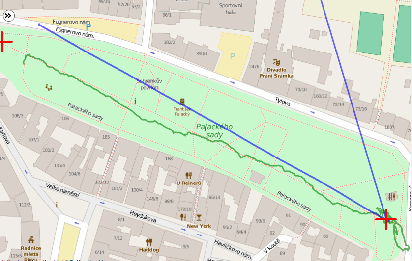

<meta charset="utf-8">
<meta name="viewport" content="width=device-width, initial-scale=1">
<title>ARBot – Robotem rovně 2017</title>
<link rel="icon" href="../assets/img/arbot-logo.png">
<link rel="preconnect" href="https://fonts.googleapis.com">
<link rel="preconnect" href="https://fonts.gstatic.com" crossorigin>
<link rel="stylesheet" href="https://fonts.googleapis.com/css2?family=Archivo:wght@500;600;700&amp;family=JetBrains+Mono:wght@400;600&amp;family=Newsreader:opsz,wght@6..72,400;6..72,500;6..72,600&amp;display=swap">
<link rel="stylesheet" href="../assets/site.css">

<header class="sitehead">
  <a class="brand" href="../index.html"><span>ARBot</span></a>
  <nav>
      <a href="../index.html">Úvod</a>
      <a href="../pages/prezentace.html">Jak to funguje</a>
      <a href="../pages/historie.html">Historie</a>
      <a href="../pages/umisteni-v-soutezich.html" class="on">Umístění v soutěžích</a>
      <a href="../pages/verze.html">Verze</a>
      <a href="../pages/technicke-clanky.html">Technické články</a>
      <a href="../pages/kontakt.html">Kontakt</a>
  </nav>
</header>
<main>
  <div class="pagehead">
    <p class="eyebrow">Robotem rovně &middot; 2017</p>
    <h1>Robotem rovně 2017</h1>
  </div>

<section class="first">
  <p>Pro letošní sezónu jsem opustit technologii FPGA se stereoskopickou kamerou vlastní konstrukce, ale ve 3D vnímání světa vidím mnoho výhod a tak jsem se rozhodl použit komerční RGBD kameru Intel RealSense R200 a SBC UP2, který jsem podpořil na Kickstarteru. SW jsem upravil z linuxu pro windows. Nakódoval jsem algoritmy pro detekci překážek z 3D kamery. Sonary jsem vyměnil za lidarem Slamtec RPLIDAR A2. Algoritmus VFH jsem nahradil navigací na gridu. No pak jsem už jen čekal až mi dorazí UP2. Jenže SBC mi do závodu nedorazil a tak jsem ho narychlo nahrazoval notebookem Acer Aspire ES13. A ejhle, notes lidar neutáhne. Nu což, pojedu bez lidaru. A takhle jsem dorazil do Písku</p>

  <h2>1. Kolo</h2>

  <p>Po startovním hvizdu robot vyrazil kupředu, ale něco je špatně. Jede mírně doleva a po cca metrech 30 vyjíždí do trávy. Krátká analýza problému, vypnutí všech neklíčových algoritmů, vlastně zbyl jediný &ndash; jízda podle kompasu a posunul jsem požadovaný směr jízdy o 5 stupňů doprava.</p>

  <h2>2. Kolo</h2>

  <p>Tentokrát byl výsledek mnohem lepší. 108 metrů bylo výrazné zlepšení, ale zase to táhlo doleva. Do třetího kola bylo spousta času a tak jsem se pustil do testování. Z logů vyplynulo, že do levého motoru je nutné posílat o cca 6% vyšší akční zásah, aby robot jel rovně. V několika iteracích jsem zvýšil zesílení regulátoru, upravil požadovaný směr jízdy a vše důkladně přetestoval na závodní dráze.</p>

  <h2>3. Kolo</h2>

  <p>Již první metry naznačily, co bude následovat. Robot jel krásně středem. Minul značku 100m, 150m, 200m, 250m a 314m v čase 305 sekund. Hurááááá. V tu chvíli to byl nejlepší výsledek závodu. Jenže dlouho nevydržel. Famózních 214 sekund týmu Short Circuits je nepřekonatelných. Zvýšil jsem tedy rychlost na maximum.</p>

  <h2>4. Kolo</h2>

  <p>Vyšší rychlost se projevila jemným kmitáním robotu a opět táhnul doleva. Závodní dráhu opustil u značky 120m.</p>

  <h2>Co se pokazilo?</h2>

  <p>Tak to bych taky rád věděl. Robot jel po cestičce, ale modrá čára v následujícím obrázku ukazuje kudy si robot „myslel“, že jede. Velmi dobře to souhlasí se zadaným směrem. Zelená čára reprezentuje údaje z GPS. Domníval jsem se, že problém by mohl být v motorové jednotce, ale její testování neukázalo žádný problém. Že by magnetická deklinace? Ta je v ČR cca 3.5 stupně východně, ale já mám odchylku 7.5 stupně západně. Možná by pomohlo překalibrování kompasu, ale to nebude řešení celého problému. Zatím je to pro mne záhada. :-)</p>

  <figure>
    
    <figcaption>Mapa průjezdu 4. kolem</figcaption>
  </figure>
</section>

<section>
  <p><a href="umisteni-v-soutezich.html">&larr; Zpět na Umístění v soutěžích</a></p>
  <p class="mono" style="font-size:13px;color:var(--muted)">Text a obrázky jsou převzaté z původního webu na Google Sites; znění článku je beze změn.</p>
</section>

<footer>
  <div class="foot-in">
    <span class="mono">ARBOT &middot; AUTONOMNÍ MOBILNÍ ROBOT</span>
    <span>Zdrojový kód, vývojová dokumentace a měření:
      <a href="https://github.com/AlesRuda/ARBot3">github.com/AlesRuda/ARBot3</a></span>
  </div>
</footer>
</main>
